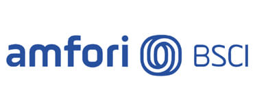
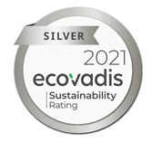
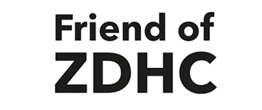
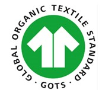
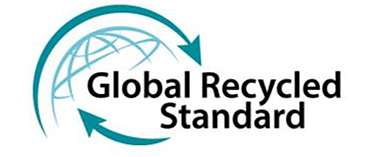
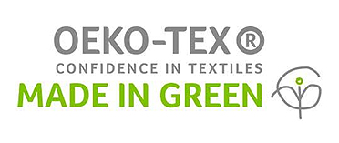
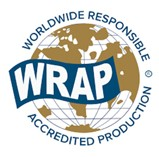
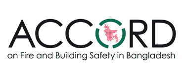
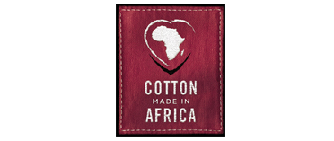

A bold vision for trade that delivers social, environmental, and economic benefits for everyone — backed by the world's leading certifications.
We want to create a world where all trade delivers social, environmental and economic benefits for everyone.
This is our vision — a bold ambition that has propelled us to reshape our organisation so it is fit for the future and fit for purpose. Vision 2030 is the strategy that will help us get there.
amfori BSCI is a leading business-driven initiative for companies committed to improving working conditions in global supply chains. ENSA and our partner factories are fully aligned with the amfori vision: trade that benefits people and the planet.
As an amfori member, we participate in regular social audits and continuous improvement cycles — ensuring every factory in our network upholds human rights, fair wages, and safe working conditions.

The EcoVadis sustainability assessment methodology is the heart of our Ratings and Scorecards. It evaluates how well a company has integrated the principles of Sustainability and CSR into their business and management system.
It is based on seven founding principles — covering environment, labour practices, fair business ethics, and sustainable procurement across the entire supply chain.

Every certification ENSA holds reflects a tangible commitment to people, planet, and product quality. Together they give our buyers complete confidence in their sourcing partner.

Friends of ZDHC gain deeper visibility over their supply chain. ENSA participates in ZDHC's Chemical Module and Wastewater Module, using gateway solutions to actively engage suppliers and evaluate performance.

Developed by leading standard-setters to define worldwide recognised requirements for organic textiles. From the harvesting of raw materials to environmentally and socially responsible manufacturing and labelling — GOTS certified textiles provide credible assurance to the consumer.
Organic Textile Assurance
Originally developed by Control Union Certifications in 2008 and transferred to Textile Exchange in 2011. The GRS is an international voluntary full product standard setting requirements for third-party certification of recycled content, chain of custody, social and environmental practices, and chemical restrictions.
Recycled Content VerifiedThe IAF is the world association of Conformity Assessment Accreditation Bodies covering management systems, products, services and personnel. ILAC is the international accreditation body for calibration, testing, and inspection bodies operating in accordance with ISO/IEC 17011 and 17025.
International Accreditation
Since 1992, OEKO-TEX® has offered practical, tailored solutions for product stewardship and consumer protection. Their modular system ensures traceability, transparency and cost reduction along the textile and leather supply chains — providing tools for safety and sustainability management.
Consumer Safety CertifiedSedex is one of the world's leading ethical trade membership organisations. Working with businesses to improve working conditions in global supply chains, Sedex provides an online platform, tools and services to help businesses operate responsibly, protect workers, and source ethically.
Ethical Supply Chain
WRAP promotes safe, lawful, humane and ethical manufacturing around the world. It certifies factories according to twelve Worldwide Responsible Apparel Production Principles covering compliance, safety, worker rights, environmental practices, and community responsibility.
12 Production Principles
Signed on 24 April 2013, the Accord is a five-year independent, legally binding Global Framework Agreement between global brands, retailers and trade unions. It was designed to build a safe and healthy Bangladeshi Ready Made Garment industry, and ENSA partner factories are fully compliant.
Factory Safety Verified
Cotton made in Africa (CMIA) promotes strict environmental, economic and social sustainability criteria. The Better Cotton Initiative (BCI) is a non-profit multistakeholder group improving cotton farming standards across 21 countries. As of 2017, Better Cotton accounts for 14% of global cotton production.
Sustainable Cotton SourcingThe certifications we have attained for our supply base, products and practices give you the confidence that your brand is sourcing using the best partners and techniques.
Every standard we uphold is a promise to our buyers, our workers, and our planet — backed by independent third-party verification.